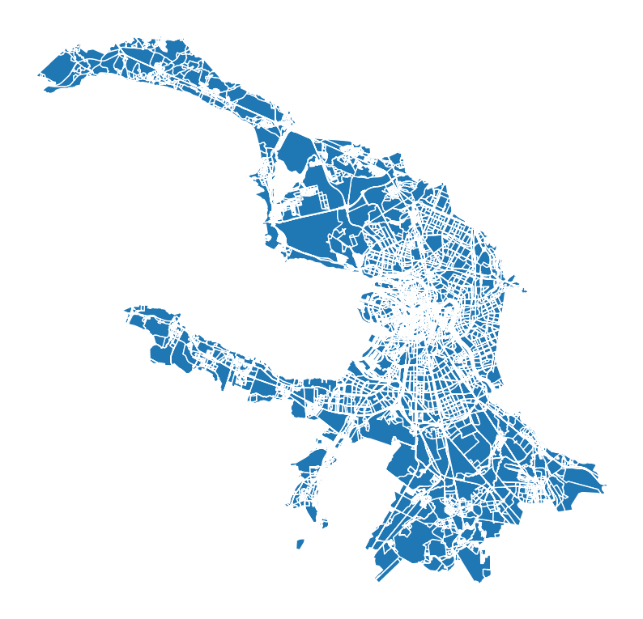
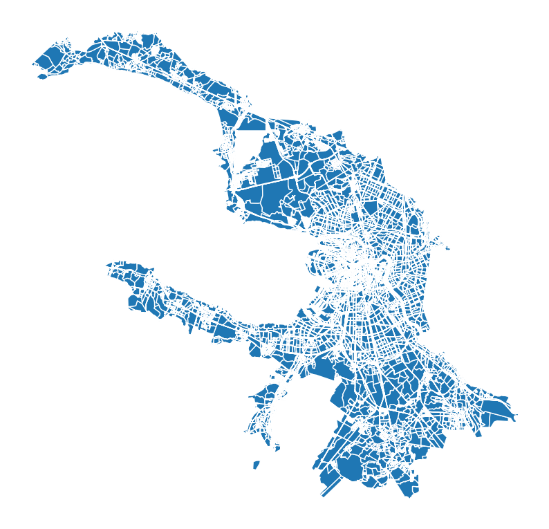
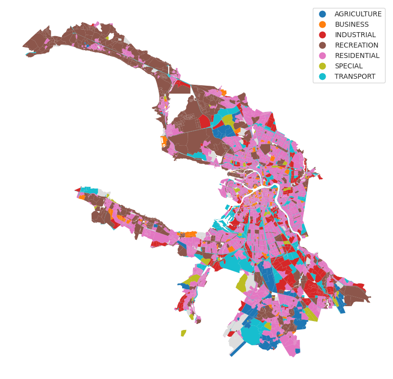

City blocks layer generating
[49]:
import os
import geopandas as gpd
data_path = "./data"
[50]:
boundaries = gpd.read_parquet(os.path.join(data_path, "boundaries.parquet"))
local_crs = boundaries.estimate_utm_crs()
boundaries = boundaries.to_crs(local_crs)
local_crs
[50]:
<Projected CRS: EPSG:32636>
Name: WGS 84 / UTM zone 36N
Axis Info [cartesian]:
- E[east]: Easting (metre)
- N[north]: Northing (metre)
Area of Use:
- name: Between 30°E and 36°E, northern hemisphere between equator and 84°N, onshore and offshore. Belarus. Cyprus. Egypt. Ethiopia. Finland. Israel. Jordan. Kenya. Lebanon. Moldova. Norway. Russian Federation. Saudi Arabia. Sudan. Syria. Türkiye (Turkey). Uganda. Ukraine.
- bounds: (30.0, 0.0, 36.0, 84.0)
Coordinate Operation:
- name: UTM zone 36N
- method: Transverse Mercator
Datum: World Geodetic System 1984 ensemble
- Ellipsoid: WGS 84
- Prime Meridian: Greenwich
BlocksGenerator
[30]:
from blocksnet import BlocksGenerator
water = gpd.read_parquet(os.path.join(data_path, "osm/water.parquet")).to_crs(local_crs)
roads = gpd.read_parquet(os.path.join(data_path, "osm/roads.parquet")).to_crs(local_crs)
railways = gpd.read_parquet(os.path.join(data_path, "osm/railways.parquet")).to_crs(local_crs)
bg = BlocksGenerator(boundaries=boundaries, water=water, roads=roads, railways=railways)
2024-07-18 13:39:21.394 | INFO | blocksnet.preprocessing.blocks_generator:__init__:75 - Check boundaries schema
2024-07-18 13:39:21.403 | INFO | blocksnet.preprocessing.blocks_generator:__init__:79 - Check roads schema
2024-07-18 13:39:21.426 | INFO | blocksnet.preprocessing.blocks_generator:__init__:85 - Check railways schema
2024-07-18 13:39:21.435 | INFO | blocksnet.preprocessing.blocks_generator:__init__:91 - Check water schema
2024-07-18 13:39:21.449 | INFO | blocksnet.preprocessing.blocks_generator:__init__:100 - Exclude water objects
[31]:
blocks = bg.run()
2024-07-18 13:48:39.244 | INFO | blocksnet.preprocessing.blocks_generator:run:136 - Generating blocks
2024-07-18 13:48:39.548 | INFO | blocksnet.preprocessing.blocks_generator:run:145 - Setting up enclosures
2024-07-18 13:48:44.418 | INFO | blocksnet.preprocessing.blocks_generator:run:149 - Filling holes
2024-07-18 13:48:45.528 | INFO | blocksnet.preprocessing.blocks_generator:run:153 - Dropping overlapping blocks
2024-07-18 13:48:47.725 | INFO | blocksnet.preprocessing.blocks_generator:run:167 - Calculating blocks area
2024-07-18 13:48:47.834 | INFO | blocksnet.preprocessing.blocks_generator:run:174 - Blocks generated
[32]:
blocks.head()
[32]:
| geometry | |
|---|---|
| 0 | POLYGON ((355560.390 6648337.904, 355563.648 6... |
| 1 | POLYGON ((355572.149 6648335.572, 355567.560 6... |
| 2 | POLYGON ((355572.149 6648335.572, 355583.354 6... |
| 3 | POLYGON ((355923.192 6648257.264, 355912.941 6... |
| 4 | POLYGON ((355923.192 6648257.264, 355930.255 6... |
[33]:
blocks.plot(figsize=(10,10)).set_axis_off()

BlocksSplitter
[51]:
from blocksnet import BlocksSplitter
buildings = gpd.read_parquet(os.path.join(data_path, 'buildings.parquet')).to_crs(local_crs)
buildings.geometry = buildings.representative_point()
bs = BlocksSplitter(blocks, buildings)
[37]:
blocks = bs.run()
blocks
2024-07-18 13:49:28.761 | INFO | blocksnet.preprocessing.blocks_splitter:run:164 - Joining buildings and blocks to exclude duplicates
2024-07-18 13:49:29.980 | INFO | blocksnet.preprocessing.blocks_splitter:run:173 - Choosing blocks to be splitted
2024-07-18 13:49:30.393 | INFO | blocksnet.preprocessing.blocks_splitter:run:182 - Splitting filtered blocks
33%|███▎ | 83/250 [00:41<01:02, 2.66it/s]/home/vasilstar/masterplanning/.venv/lib/python3.10/site-packages/shapely/constructive.py:963: RuntimeWarning: invalid value encountered in voronoi_polygons
return lib.voronoi_polygons(geometry, tolerance, extend_to, only_edges, **kwargs)
40%|████ | 100/250 [00:48<01:20, 1.87it/s]/home/vasilstar/masterplanning/.venv/lib/python3.10/site-packages/shapely/constructive.py:963: RuntimeWarning: invalid value encountered in voronoi_polygons
return lib.voronoi_polygons(geometry, tolerance, extend_to, only_edges, **kwargs)
50%|█████ | 125/250 [00:55<00:33, 3.75it/s]/home/vasilstar/masterplanning/.venv/lib/python3.10/site-packages/shapely/constructive.py:963: RuntimeWarning: invalid value encountered in voronoi_polygons
return lib.voronoi_polygons(geometry, tolerance, extend_to, only_edges, **kwargs)
51%|█████ | 127/250 [00:55<00:24, 5.00it/s]/home/vasilstar/masterplanning/.venv/lib/python3.10/site-packages/shapely/constructive.py:963: RuntimeWarning: invalid value encountered in voronoi_polygons
return lib.voronoi_polygons(geometry, tolerance, extend_to, only_edges, **kwargs)
100%|██████████| 250/250 [01:44<00:00, 2.39it/s]
[37]:
| geometry | |
|---|---|
| 0 | POLYGON ((354918.622 6625258.829, 354901.464 6... |
| 1 | POLYGON ((355412.142 6623378.149, 355411.700 6... |
| 2 | POLYGON ((353934.329 6625429.433, 353923.453 6... |
| 3 | POLYGON ((355099.099 6623847.765, 355074.808 6... |
| 4 | POLYGON ((352766.168 6621954.748, 352744.412 6... |
| ... | ... |
| 16315 | POLYGON ((335210.252 6655823.328, 335105.217 6... |
| 16316 | POLYGON ((315582.435 6679561.357, 315523.467 6... |
| 16317 | POLYGON ((316419.909 6679189.653, 316319.749 6... |
| 16318 | POLYGON ((315709.232 6679519.841, 315748.877 6... |
| 16319 | POLYGON ((335817.591 6619414.920, 335727.256 6... |
16320 rows × 1 columns
[38]:
blocks.plot(figsize=(10,10)).set_axis_off()

LandUseProcessor
[52]:
from blocksnet import LandUseProcessor
zones = gpd.read_parquet(os.path.join(data_path, "zones.parquet")).to_crs(local_crs)
lup = LandUseProcessor(blocks=blocks, zones=zones)
[53]:
blocks = lup.run()
2024-07-18 13:55:56.345 | INFO | blocksnet.preprocessing.land_use_proccessor:run:183 - Overlaying geometries
2024-07-18 13:56:06.119 | INFO | blocksnet.preprocessing.land_use_proccessor:run:196 - Finding sum of intersection areas
2024-07-18 13:56:06.176 | INFO | blocksnet.preprocessing.land_use_proccessor:run:208 - Getting intersecting attributes
Save the result for the next example
[54]:
blocks.head()
[54]:
| geometry | zone | land_use | |
|---|---|---|---|
| 0 | POLYGON ((354918.622 6625258.829, 354901.464 6... | NaN | None |
| 1 | POLYGON ((355412.142 6623378.149, 355411.700 6... | ТИ3 | TRANSPORT |
| 2 | POLYGON ((353934.329 6625429.433, 353923.453 6... | ТР2 | RECREATION |
| 3 | POLYGON ((355099.099 6623847.765, 355074.808 6... | Т3Ж1 | RESIDENTIAL |
| 4 | POLYGON ((352766.168 6621954.748, 352744.412 6... | ТР4 | RECREATION |
[55]:
ax = blocks.plot(color='#ddd', figsize=(10,10), linewidth=0)
blocks.plot(column='land_use', legend=True, ax=ax, linewidth=0).set_axis_off()

Saving the results
[56]:
blocks.to_parquet(os.path.join(data_path, "blocks.parquet"))